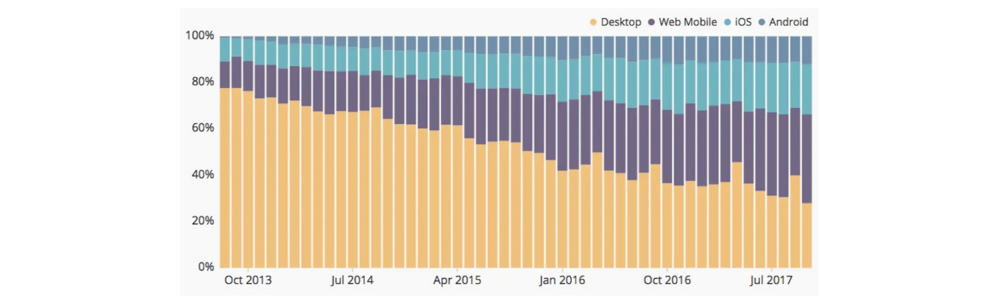
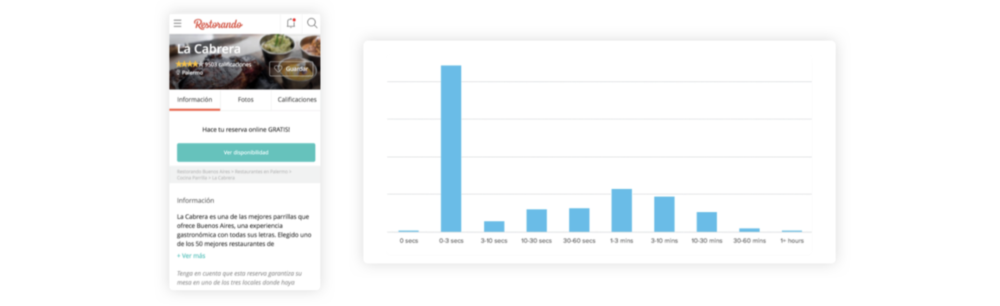
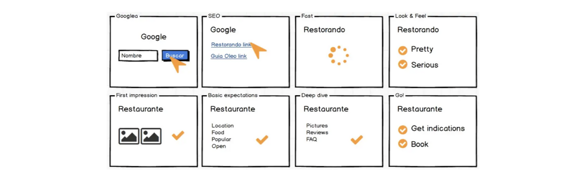
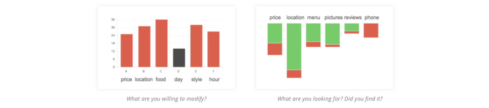
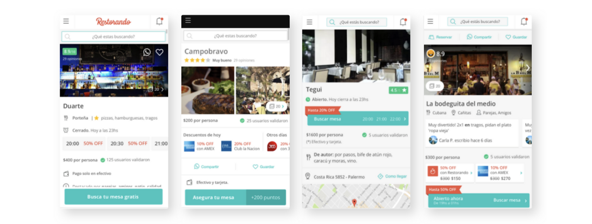
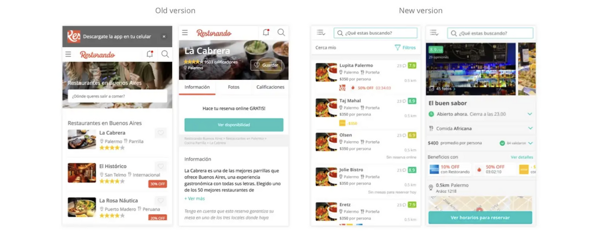
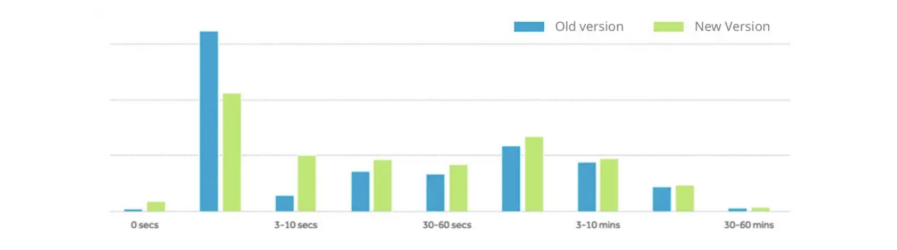

Restorando: Find the right restaurant
Argentina, 2018
The Goal
IThe problem we had to solve was to reduce the bounce rate on the profile screen of the restaurants, where most of our traffic is.
Of the 4 possible platforms that we have, we decided to focus on mobile web since, as you can see in the following chart, it is the platform with the highest growth in the last 4 years. On the other hand, it also offers an agility that native apps don’t, allowing us to validate, experiment and test faster.
Most of our users spend less than 3 seconds on the restaurant’s profile screen, a clear sign that we were not meeting their needs, but why?
So far the site had a transactional approach, encouraging the user to book. So, the first thing you saw in a restaurant profile was the text “Book for free” and the “See availability” button. We decided to ask ourselves the following question: What is the problem that users need to solve when they arrive at Restorando? What is their Job To Be Done (problem or task that a person needs to perform)?
Team & Process
- Lead Designer: Stefania
- Manager: CTO
- Collaborators: I worked closely with a Product Designer within our squad, maintaining alignment throughout the process on our projects. Additionally, the development team, also part of our squad, provided crucial technical feedback to ensure feasibility. We shared collaboration instances to address challenges and refine our approach.
Research: Initial survey
We surveyed the users that arrived to the restaurant profile page. The question we asked was: what do you want to do? And we offered them the tasks that we thought were the most relevant, allowing them to add additional options if necessary:
- Find where to eat.
- Book a table
- Find specific information about a restaurant
- Other
To those who answered “Book a table” we also asked if they already knew where they wanted to eat, and to those who were looking for information about a restaurant we asked them how flexible they were to change places if the restaurant couldn’t accommodate them. The results were the following:
As you can see, almost 60% of our users want to go out for dinner and have not yet decided where (Find + Book but don’t know where) and 20% of those who do know (5% of total traffic) are willing to change the restaurant they had chosen initially if there is no availability.
Summarizing: almost two-thirds of our users visit to our web app without knowing where to eat and evaluating the restaurant they searched. Our job is, then, to help them make that decision on the restaurant’s profile screen.
Storyboard
In order to devise solutions, we created a storyboard that helped us understand the micro-moments of the user that needs to know if a restaurant is good for them.
Surveys
So, How do users know if a place is good for them? We published new surveys to understand what information was relevant to our users and whether they could find it on the site or not. These were some of the learnings:
- The zone is the most searched information on mobile web and the vast majority finds it.
- Prices is the second most relevant and almost half of the users don’t find them.
- Menu and photos are similarly searched and mostly found.
- They are also looking for a telephone number to contact the restaurant, but we didn’t give that option.
- Finally, the reviews of the place.
- The variable that users are less willing to change is the day.
Heatmaps
In addition, we created heatmaps that enabled us to understand the current use of the restaurant’s profile. Some of the most relevant observations were:
- The photo section is the most clicked. Even if in the surveys users didn’t say they were looking for photos, by looking at the events and heatmaps we can see that it is one of the most performed actions. That is why it is important to combine different sources of information, qualitative and quantitative. (What users say is not the same to what they do!)
- sers interact with the detail items (price, schedule, payment methods and food). We could assume that they want to see more information about each of these items.
Formulate hypothesis
With all the collected information we made a first low quality prototype, reformulating the hierarchy and architecture of the information. Also, we write down doubts about the solution to answer them in the test with users.
Validate with users
To validate the hypothesis we created different versions of the same strategy so that we could find weaknesses and strengths in each design. By defining different real life scenarios we were able those how the designs work for each use case.
SPrevious to the usability tests with prototypes, we usually do an interview where we inquire about the problem we are working on. In this way we can understand the user’s needs, frustrations and get information to analyze their behavior in the user test.
We also use this information to adapt the task and scenarios to the users, so that they feel more represented and their actions become more natural. Some learnings:
- The new information’s hierarchy was a success, users could quickly find the basic information. They felt more comfortable with more spaced interfaces.
- When you have to wait for your table to be ready, the whole moment of chilling and romance is ruined; and children get anxious. However, if you are going out with a group of friends, waiting becomes less annoying. This is certainly good for us because the reservation is useful and it helps people having better moments when they dine out.
- The location of the table is important, if it’s bad people feel uncomfortable and can’t relax. Some of the bad locations that users tell us about are: a noisy place, near the door, down the air conditioner, next to the bathroom. This is a possible problem we could work in the future.
- Noise is one of the biggest complaints, it means having to shout, having difficulties listening, it creates a climate of annoyance. It is a factor that may imply discarding the place.
- » The type of food is good but they want to see it in detail, even a list of words related to food was not enough; but the full menu was very useful.
- The opening hours were seen in detail by the users. They want to know if they can eat with time or if the kitchen is about to close.
- The price is really relevant when it comes to choosing where to dine. Knowing the average price was very useful for deciding, however there were doubts about the price already including the discount or not. For some users the benefits are very important, but in general it is not exclusive to choose.
- The pictures provide a lot of information, like the type of food, the space, and what facilities does the restaurant offers. Having few pictures or providing one’s that don’t give information does not allow users to make a decision.
- The stars do not provide enough information to compare, the numeric rating allows to see more differences. The number of reviews that affect the score is an important factor when prioritizing options, especially in cases where there are very few qualifications.
- Users read at least 5 of the latest ratings. If they see several complaints they discard the place. If they see a low rating, they read the comments to see if it’s just one or there’s more. They evaluate if the complaints have or not sense for them. If the restaurant fails in aspects that are relevant to the user, and if there are several complaints about the place, they discard it as an option.
- Comments with poor content do not help in making a decision and is frustrating. To know whether a place is good or not, they have to see if the amount of positive reviews is higher than negative ones.
Iterate and Define
After all the learning we made in the tests with users and interviews, we iterated the designs in order to avoid and solve their frustrations. Having the final idea we made a limited version that was easy to implement. We apply the improvements in the restaurant’s profile and in the results page, in order to maintain consistency in the site. This way we could finish validating with the use, if these changes were a solution to the problems of our users.
Test and measure results
We validated our solution with an A / B Test against the previous version, comparing session time and conversion. The first positive result we see is that the session time increased and the bounce rate decrease.
The most important result is that users who saw the new version converted 24% more than those who visited the old version. A great success! ✊